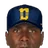

Milestone Watch round numbers, approaching and reached
Current players closing in on round-number career totals, counted across every top-tier season: the real MLB history in the export (1871–2001) plus 2002 in MLB, ABL or FBL. Pace is this season's rate per team game, carried over the club's remaining schedule. Rows are grouped by stat, biggest milestone first; click any header to re-sort.
Approaching
| Player | Team | Stat | Milestone | Career | To go | 2002 | 2002 pace finish | ETA at pace |
|---|---|---|---|---|---|---|---|---|
 NYY NYY | Home runs | 600 | 587 | 13 | 20 | 641 | Jun 11 | |
 SFS SFS | Home runs | 400 | 382 | 18 | 5 | 395 | after this season | |
 MIN MIN | Home runs | 300 | 294 | 6 | 4 | 305 | Jul 20 | |
 MEXC MEXC | Home runs | 300 | 292 | 8 | 10 | 320 | Jun 17 | |
 MIL MIL | Home runs | 300 | 285 | 15 | 8 | 306 | Aug 8 | |
 AUS AUS | Home runs | 300 | 278 | 22 | 3 | 286 | after this season | |
 CLE CLE | Home runs | 300 | 275 | 25 | 12 | 308 | Aug 15 | |
 MONT MONT | Home runs | 200 | 199 | 1 | 6 | 217 | May 21 | |
 TOR TOR | Home runs | 200 | 199 | 1 | 6 | 215 | May 20 | |
 MON MON | Home runs | 200 | 194 | 6 | 6 | 211 | Jun 26 | |
 PHI PHI | Home runs | 200 | 194 | 6 | 4 | 205 | Jul 23 | |
 MIA MIA | Home runs | 200 | 194 | 6 | 7 | 213 | Jun 21 | |
 ARI ARI | Home runs | 200 | 190 | 10 | 6 | 206 | Jul 30 | |
 SACR SACR | Home runs | 200 | 186 | 14 | 2 | 192 | after this season | |
 CaTw CaTw | Home runs | 200 | 186 | 14 | 0 | 186 | - | |
| MONT | Home runs | 200 | 184 | 16 | 4 | 196 | after this season | |
 LoBa LoBa | Home runs | 200 | 183 | 17 | 2 | 189 | after this season | |
 CIN CIN | Home runs | 200 | 179 | 21 | 9 | 204 | Aug 26 | |
 DET DET | Home runs | 200 | 175 | 25 | 6 | 191 | after this season | |
 DAL DAL | Home runs | 100 | 98 | 2 | 1 | 101 | Aug 13 | |
 RiFS RiFS | Home runs | 100 | 98 | 2 | 13 | 134 | May 21 | |
 OAK OAK | Home runs | 100 | 98 | 2 | 4 | 109 | Jun 5 | |
 HOU HOU | Home runs | 100 | 96 | 4 | 2 | 101 | Aug 13 | |
| PHI | Home runs | 100 | 95 | 5 | 7 | 114 | Jun 14 | |
 EUGL EUGL | Home runs | 100 | 95 | 5 | 3 | 104 | Jul 26 | |
| SACR | Home runs | 100 | 94 | 6 | 2 | 100 | after this season | |
 SBS SBS | Home runs | 100 | 94 | 6 | 9 | 119 | Jun 11 | |
| MON | Home runs | 100 | 92 | 8 | 5 | 106 | Jul 25 | |
 CHC CHC | Home runs | 100 | 92 | 8 | 6 | 108 | Jul 15 | |
| Jim Leyritz |  COL COL | Home runs | 100 | 92 | 8 | 2 | 97 | after this season |
| TOR | Home runs | 100 | 89 | 11 | 8 | 110 | Jul 17 | |
 MePh MePh | Home runs | 100 | 89 | 11 | 5 | 103 | Aug 20 | |
 CDT CDT | Home runs | 100 | 89 | 11 | 5 | 103 | Aug 17 | |
 OKC OKC | Home runs | 100 | 88 | 12 | 1 | 91 | after this season | |
 ALBQ ALBQ | Home runs | 100 | 88 | 12 | 2 | 94 | after this season | |
| EUGL | Home runs | 100 | 86 | 14 | 1 | 89 | after this season | |
 SLB SLB | Home runs | 100 | 86 | 14 | 11 | 117 | Jul 7 | |
 ORLJ ORLJ | Home runs | 100 | 86 | 14 | 2 | 92 | after this season | |
 NASH NASH | Home runs | 100 | 86 | 14 | 5 | 100 | after this season | |
 PoBe PoBe | Home runs | 100 | 85 | 15 | 2 | 91 | after this season | |
| Paul Konerko |  KCM KCM | Home runs | 100 | 85 | 15 | 1 | 88 | after this season |
| SACR | Home runs | 100 | 83 | 17 | 4 | 94 | after this season | |
 LVG LVG | Home runs | 100 | 82 | 18 | 4 | 93 | after this season | |
 BAL BAL | Home runs | 100 | 81 | 19 | 6 | 98 | after this season | |
| BGSKY | Home runs | 100 | 81 | 19 | 0 | 81 | - | |
| Gerald Williams | KCM | Home runs | 100 | 80 | 20 | 0 | 80 | - |
| ARI | Home runs | 100 | 79 | 21 | 4 | 90 | after this season | |
 PIT PIT | Home runs | 100 | 79 | 21 | 3 | 87 | after this season | |
 BrGo BrGo | Home runs | 100 | 79 | 21 | 7 | 98 | after this season | |
| CHC | Home runs | 100 | 79 | 21 | 5 | 92 | after this season | |
| AUS | Home runs | 100 | 78 | 22 | 1 | 81 | after this season | |
| BrGo | Home runs | 100 | 78 | 22 | 5 | 91 | after this season | |
| TOR | Home runs | 100 | 77 | 23 | 5 | 90 | after this season | |
 NYK NYK | Home runs | 100 | 76 | 24 | 5 | 90 | after this season | |
| PHI | Hits | 2,500 | 2,423 | 77 | 34 | 2,514 | Aug 25 | |
| AUS | Hits | 2,500 | 2,399 | 101 | 56 | 2,554 | Aug 3 | |
| MONT | Hits | 2,000 | 1,970 | 30 | 36 | 2,076 | Jun 17 | |
| CaTw | Hits | 2,000 | 1,963 | 37 | 0 | 1,963 | - | |
 HYG HYG | Hits | 2,000 | 1,937 | 63 | 44 | 2,063 | Jul 16 | |
 VANC VANC | Hits | 2,000 | 1,925 | 75 | 43 | 2,044 | Jul 31 | |
| COL | Hits | 2,000 | 1,916 | 84 | 39 | 2,021 | Aug 21 | |
 ATL ATL | Hits | 2,000 | 1,916 | 84 | 43 | 2,031 | Aug 12 | |
| ALBQ | Hits | 1,500 | 1,497 | 3 | 32 | 1,589 | May 17 | |
 SEA SEA | Hits | 1,500 | 1,470 | 30 | 53 | 1,612 | Jun 8 | |
| MON | Hits | 1,500 | 1,457 | 43 | 30 | 1,540 | Jul 18 | |
| HOU | Hits | 1,500 | 1,453 | 47 | 44 | 1,571 | Jun 29 | |
 SDG SDG | Hits | 1,500 | 1,443 | 57 | 26 | 1,515 | Aug 20 | |
| NYY | Hits | 1,500 | 1,421 | 79 | 21 | 1,477 | after this season | |
| ALBQ | Hits | 1,500 | 1,417 | 83 | 40 | 1,532 | Aug 11 | |
 Roberto Kelly | DET | Hits | 1,500 | 1,410 | 90 | 20 | 1,464 | after this season |
| SACR | Hits | 1,000 | 992 | 8 | 26 | 1,064 | May 27 | |
| KCM | Hits | 1,000 | 992 | 8 | 55 | 1,145 | May 19 | |
| CDT | Hits | 1,000 | 990 | 10 | 6 | 1,007 | Jul 26 | |
| SFS | Hits | 1,000 | 971 | 29 | 42 | 1,084 | Jun 13 | |
| NYY | Hits | 1,000 | 970 | 30 | 45 | 1,091 | Jun 12 | |
| ALBQ | Hits | 1,000 | 964 | 36 | 34 | 1,062 | Jun 27 | |
| CDT | Hits | 1,000 | 953 | 47 | 34 | 1,050 | Jul 14 | |
| DAL | Hits | 1,000 | 945 | 55 | 28 | 1,020 | Aug 12 | |
 WCB WCB | Hits | 1,000 | 940 | 60 | 45 | 1,061 | Jul 15 | |
| SBS | Hits | 1,000 | 937 | 63 | 42 | 1,054 | Jul 20 | |
| CIN | Hits | 1,000 | 932 | 68 | 36 | 1,032 | Aug 7 | |
| LVG | Hits | 1,000 | 930 | 70 | 49 | 1,066 | Jul 18 | |
| COL | Hits | 1,000 | 928 | 72 | 39 | 1,033 | Aug 7 | |
| CIN | Hits | 1,000 | 928 | 72 | 49 | 1,064 | Jul 19 | |
 BOS BOS | Hits | 1,000 | 915 | 85 | 40 | 1,022 | Aug 20 | |
 LAA LAA | Hits | 1,000 | 900 | 100 | 55 | 1,053 | Aug 3 | |
| SBS | Hits | 1,000 | 888 | 112 | 44 | 1,010 | Sep 4 | |
| MON | Hits | 1,000 | 883 | 117 | 31 | 969 | after this season | |
| PIT | Hits | 1,000 | 882 | 118 | 46 | 1,010 | Sep 5 | |
| COL | RBI | 1,500 | 1,439 | 61 | 32 | 1,525 | Aug 10 | |
| BOS | RBI | 1,500 | 1,416 | 84 | 16 | 1,459 | after this season | |
| DET | RBI | 1,000 | 999 | 1 | 26 | 1,069 | May 15 | |
| AUS | RBI | 1,000 | 992 | 8 | 17 | 1,039 | Jun 3 | |
| ALBQ | RBI | 1,000 | 992 | 8 | 24 | 1,061 | May 27 | |
 ChKn ChKn | RBI | 1,000 | 989 | 11 | 22 | 1,050 | Jun 4 | |
| EUGL | RBI | 1,000 | 983 | 17 | 23 | 1,049 | Jun 13 | |
| HOU | RBI | 1,000 | 970 | 30 | 25 | 1,037 | Jul 10 | |
| RiFS | RBI | 1,000 | 968 | 32 | 22 | 1,029 | Jul 19 | |
| KCM | RBI | 1,000 | 954 | 46 | 37 | 1,057 | Jul 6 | |
| MIL | RBI | 1,000 | 948 | 52 | 19 | 999 | after this season | |
| HOU | RBI | 1,000 | 927 | 73 | 28 | 1,002 | Sep 9 | |
| Eric Karros | KCM | RBI | 1,000 | 915 | 85 | 12 | 948 | after this season |
 NOLA NOLA | RBI | 1,000 | 912 | 88 | 16 | 956 | after this season | |
| LAA | Runs | 1,000 | 992 | 8 | 30 | 1,075 | May 25 | |
| NOLA | Runs | 1,000 | 980 | 20 | 16 | 1,024 | Jul 6 | |
 LAD LAD | Runs | 1,000 | 977 | 23 | 20 | 1,031 | Jul 8 | |
| ORLJ | Runs | 1,000 | 977 | 23 | 26 | 1,049 | Jun 21 | |
 HONO HONO | Runs | 1,000 | 965 | 35 | 19 | 1,018 | Aug 4 | |
| EUGL | Runs | 1,000 | 955 | 45 | 28 | 1,035 | Jul 23 | |
| SFS | Runs | 1,000 | 949 | 51 | 2 | 954 | after this season | |
| KCM | Runs | 1,000 | 937 | 63 | 25 | 1,006 | Sep 3 | |
| CHC | Runs | 1,000 | 933 | 67 | 14 | 971 | after this season | |
| KCM | Runs | 1,000 | 910 | 90 | 32 | 999 | after this season | |
| NYY | Stolen bases | 500 | 487 | 13 | 3 | 495 | after this season | |
| SACR | Stolen bases | 500 | 487 | 13 | 8 | 509 | Jul 26 | |
| EUGL | Stolen bases | 400 | 394 | 6 | 6 | 411 | Jun 24 | |
| NOLA | Stolen bases | 400 | 384 | 16 | 7 | 403 | Aug 24 | |
| MONT | Stolen bases | 400 | 371 | 29 | 6 | 389 | after this season | |
| CHC | Stolen bases | 300 | 275 | 25 | 2 | 280 | after this season | |
| SBS | Stolen bases | 300 | 273 | 27 | 6 | 290 | after this season | |
| ATL | Stolen bases | 300 | 271 | 29 | 6 | 287 | after this season | |
| MePh | Stolen bases | 200 | 194 | 6 | 13 | 230 | Jun 3 | |
| NOLA | Stolen bases | 200 | 193 | 7 | 1 | 196 | after this season | |
| CHC | Stolen bases | 200 | 188 | 12 | 5 | 201 | Sep 1 | |
| SACR | Stolen bases | 200 | 185 | 15 | 3 | 193 | after this season | |
| HYG | Stolen bases | 200 | 181 | 19 | 5 | 195 | after this season | |
| MONT | Stolen bases | 200 | 180 | 20 | 2 | 186 | after this season | |
| CDT | Stolen bases | 200 | 176 | 24 | 1 | 179 | after this season | |
| PHI | Stolen bases | 200 | 174 | 26 | 5 | 187 | after this season | |
| LoBa | Stolen bases | 200 | 174 | 26 | 3 | 183 | after this season | |
| HYG | Stolen bases | 200 | 171 | 29 | 1 | 174 | after this season | |
| MON | Doubles | 500 | 496 | 4 | 8 | 518 | Jun 4 | |
| NYY | Doubles | 500 | 486 | 14 | 3 | 494 | after this season | |
| HONO | Doubles | 400 | 397 | 3 | 5 | 411 | Jun 8 | |
| MONT | Doubles | 400 | 397 | 3 | 5 | 412 | Jun 7 | |
| LoBa | Doubles | 400 | 382 | 18 | 9 | 408 | Aug 9 | |
| KCM | Doubles | 400 | 378 | 22 | 8 | 400 | Sep 12 | |
| KCM | Doubles | 400 | 377 | 23 | 12 | 410 | Aug 8 | |
| HOU | Doubles | 300 | 298 | 2 | 10 | 325 | May 23 | |
| CLE | Doubles | 300 | 296 | 4 | 10 | 324 | May 30 | |
| OAK | Doubles | 300 | 294 | 6 | 7 | 313 | Jun 21 | |
| HOU | Doubles | 300 | 285 | 15 | 7 | 304 | Aug 20 | |
| CHC | Doubles | 300 | 285 | 15 | 9 | 309 | Jul 30 | |
| Eric Karros | KCM | Doubles | 300 | 282 | 18 | 6 | 299 | after this season |
 DUCK DUCK | Doubles | 300 | 281 | 19 | 0 | 281 | - | |
| MIL | Doubles | 300 | 279 | 21 | 9 | 303 | Aug 29 | |
| LAD | Doubles | 300 | 276 | 24 | 9 | 300 | Sep 13 | |
| MON | Doubles | 300 | 275 | 25 | 4 | 286 | after this season | |
| HOU | Doubles | 300 | 275 | 25 | 10 | 302 | Sep 5 | |
| SACR | Doubles | 300 | 273 | 27 | 6 | 290 | after this season | |
| BrGo | Doubles | 300 | 272 | 28 | 12 | 304 | Aug 29 | |
| SLB | Doubles | 300 | 272 | 28 | 6 | 289 | after this season | |
| ALBQ | Doubles | 300 | 271 | 29 | 9 | 297 | after this season | |
| HYG | Walks | 1,000 | 973 | 27 | 21 | 1,033 | Jul 7 | |
| EUGL | Walks | 1,000 | 961 | 39 | 19 | 1,016 | Aug 12 | |
| ARI | Walks | 1,000 | 935 | 65 | 30 | 1,015 | Aug 21 | |
| COL | Walks | 1,000 | 929 | 71 | 23 | 991 | after this season | |
| MONT | Walks | 1,000 | 928 | 72 | 15 | 972 | after this season | |
| PHI | Walks | 1,000 | 918 | 82 | 16 | 961 | after this season | |
| MEXC | Walks | 1,000 | 907 | 93 | 32 | 996 | after this season | |
| CDT | Walks | 1,000 | 901 | 99 | 16 | 947 | after this season |
Reached in 2002

Approaching
| Player | Team | Stat | Milestone | Career | To go | 2002 | 2002 pace finish | ETA at pace |
|---|---|---|---|---|---|---|---|---|
| DET | Wins | 200 | 197 | 3 | 4 | 208 | Jun 15 | |
| HYG | Wins | 200 | 194 | 6 | 5 | 208 | Jul 3 | |
 ALSK ALSK | Wins | 150 | 148 | 2 | 1 | 151 | Aug 11 | |
| CDT | Wins | 150 | 147 | 3 | 6 | 164 | Jun 4 | |
| SBS | Wins | 150 | 140 | 10 | 2 | 146 | after this season | |
| TOR | Wins | 150 | 140 | 10 | 0 | 140 | - | |
| LAD | Wins | 150 | 136 | 14 | 4 | 147 | after this season | |
 Tusc Tusc | Wins | 150 | 135 | 15 | 0 | 135 | - | |
| SBS | Wins | 100 | 97 | 3 | 4 | 108 | Jun 14 | |
| SBS | Wins | 100 | 97 | 3 | 3 | 105 | Jun 26 | |
| PHI | Wins | 100 | 95 | 5 | 0 | 95 | - | |
 JUPI JUPI | Wins | 100 | 94 | 6 | 0 | 94 | - | |
| MePh | Wins | 100 | 90 | 10 | 4 | 101 | Sep 2 | |
| WCB | Wins | 100 | 88 | 12 | 2 | 93 | after this season | |
| OAK | Wins | 100 | 88 | 12 | 0 | 88 | - | |
 SaSa SaSa | Wins | 100 | 87 | 13 | 5 | 101 | Sep 6 | |
| MON | Wins | 100 | 85 | 15 | 5 | 99 | after this season | |
| WCB | Wins | 100 | 85 | 15 | 3 | 93 | after this season | |
| BOS | Strikeouts | 3,500 | 3,493 | 7 | 81 | 3,710 | May 17 | |
| HYG | Strikeouts | 2,500 | 2,478 | 22 | 42 | 2,599 | Jun 5 | |
| NYK | Strikeouts | 2,000 | 1,967 | 33 | 31 | 2,053 | Jun 29 | |
| OAK | Strikeouts | 2,000 | 1,961 | 39 | 34 | 2,052 | Jul 8 | |
| SaSa | Strikeouts | 1,500 | 1,486 | 14 | 54 | 1,636 | May 25 | |
| ALBQ | Strikeouts | 1,500 | 1,483 | 17 | 34 | 1,581 | Jun 4 | |
 SARe SARe | Strikeouts | 1,500 | 1,438 | 62 | 33 | 1,530 | Aug 7 | |
| VANC | Strikeouts | 1,500 | 1,417 | 83 | 36 | 1,517 | Aug 25 | |
| BOS | Strikeouts | 1,500 | 1,403 | 97 | 37 | 1,502 | Sep 11 | |
| LVG | Strikeouts | 1,500 | 1,398 | 102 | 30 | 1,481 | after this season | |
| TOR | Strikeouts | 1,500 | 1,397 | 103 | 7 | 1,416 | after this season | |
| KCM | Strikeouts | 1,500 | 1,351 | 149 | 36 | 1,451 | after this season | |
| SFS | Strikeouts | 1,000 | 996 | 4 | 22 | 1,055 | May 21 | |
| SBS | Strikeouts | 1,000 | 980 | 20 | 38 | 1,085 | Jun 6 | |
| JUPI | Strikeouts | 1,000 | 974 | 26 | 0 | 974 | - | |
| ARI | Strikeouts | 1,000 | 970 | 30 | 7 | 989 | after this season | |
| Ismael Valdez | HOU | Strikeouts | 1,000 | 965 | 35 | 35 | 1,059 | Jun 27 |
| DET | Strikeouts | 1,000 | 959 | 41 | 8 | 980 | after this season | |
| LAA | Strikeouts | 1,000 | 927 | 73 | 43 | 1,046 | Jul 29 | |
| OAK | Strikeouts | 1,000 | 918 | 82 | 11 | 948 | after this season | |
| AUS | Strikeouts | 1,000 | 903 | 97 | 49 | 1,039 | Aug 11 | |
 QCRB QCRB | Strikeouts | 1,000 | 889 | 111 | 0 | 889 | - | |
| CIN | Strikeouts | 1,000 | 879 | 121 | 38 | 984 | after this season | |
| ChKn | Strikeouts | 1,000 | 864 | 136 | 11 | 895 | after this season | |
| WCB | Strikeouts | 1,000 | 858 | 142 | 31 | 941 | after this season | |
 SJC SJC | Saves | 300 | 294 | 6 | 0 | 294 | - | |
| SEA | Saves | 300 | 278 | 22 | 7 | 297 | after this season | |
| ALSK | Saves | 300 | 276 | 24 | 10 | 304 | Aug 28 | |
| VANC | Saves | 200 | 191 | 9 | 11 | 222 | Jun 18 | |
 STL STL | Saves | 200 | 184 | 16 | 1 | 187 | after this season | |
| MePh | Saves | 100 | 99 | 1 | 0 | 99 | - | |
| MIA | Saves | 100 | 99 | 1 | 2 | 104 | Jun 5 | |
| ARI | Saves | 100 | 98 | 2 | 0 | 98 | - | |
| ATL | Saves | 100 | 95 | 5 | 6 | 111 | Jun 20 | |
| MIA | Saves | 100 | 90 | 10 | 8 | 111 | Jul 12 | |
| ARI | Saves | 100 | 90 | 10 | 0 | 90 | - | |
| BAL | Saves | 100 | 87 | 13 | 0 | 87 | - | |
| MON | Saves | 100 | 85 | 15 | 0 | 85 | - | |
| BrGo | Saves | 100 | 85 | 15 | 9 | 109 | Jul 30 | |
| SaSa | Saves | 100 | 71 | 29 | 1 | 74 | after this season | |
| LVG | Saves | 100 | 71 | 29 | 6 | 88 | after this season | |
| LoBa | Innings | 4,000 | 3948.1 | 51.2 | 61.1 | 4124.1 | Jun 18 | |
| DET | Innings | 3,000 | 2937.2 | 62.1 | 57.0 | 3090.2 | Jul 1 | |
| SBS | Innings | 2,500 | 2454.2 | 45.1 | 47.1 | 2586.0 | Jun 24 | |
| NYK | Innings | 2,500 | 2447.0 | 53.0 | 38.2 | 2554.1 | Jul 15 | |
| CDT | Innings | 2,500 | 2351.2 | 148.1 | 58.0 | 2516.2 | Sep 2 | |
| LVG | Innings | 2,000 | 1987.0 | 13.0 | 28.0 | 2064.2 | Jun 3 | |
| KCM | Innings | 2,000 | 1917.2 | 82.1 | 24.0 | 1984.1 | after this season | |
| MePh | Innings | 1,500 | 1488.1 | 11.2 | 55.1 | 1642.0 | May 23 | |
| CDT | Innings | 1,500 | 1478.1 | 21.2 | 51.2 | 1625.1 | May 31 | |
| WCB | Innings | 1,500 | 1462.1 | 37.2 | 51.2 | 1601.0 | Jun 14 | |
| HOU | Innings | 1,500 | 1430.2 | 69.1 | 61.1 | 1595.1 | Jul 3 | |
| SaSa | Innings | 1,500 | 1396.2 | 103.1 | 48.0 | 1530.0 | Aug 18 | |
| Ismael Valdez | HOU | Innings | 1,500 | 1351.1 | 148.2 | 55.2 | 1500.2 | Sep 13 |
Reached in 2002
| Player | Team | Stat | Milestone | Reached | Career now |
|---|---|---|---|---|---|
| SFS | Wins | 100 | Apr 8 | 101 | |
| LAD | Strikeouts | 2,000 | Apr 5 | 2,061 | |
| ARI | Strikeouts | 1,500 | Mar 31 | 1,563 | |
| CDT | Strikeouts | 1,000 | Apr 23 | 1,018 | |
| EUGL | Strikeouts | 1,000 | Apr 1 | 1,037 | |
 SDP SDP | Innings | 2,500 | Apr 17 | 2541.2 | |
| TOR | Innings | 1,500 | Apr 22 | 1528.1 | |
| EUGL | Innings | 1,500 | May 8 | 1509.2 | |
| SFS | Innings | 1,500 | May 6 | 1506.2 |
Watch windows: Home runs: within 25; Hits: within 120; RBI: within 100; Runs: within 100; Stolen bases: within 30; Doubles: within 30; Walks: within 100; Wins: within 15; Strikeouts: within 150; Saves: within 30; Innings: within 150 (innings in innings). Career totals use top-tier rows only (split 1, level 1); minor-league numbers do not count, matching how the record book counts. The reached date is the game where the running total (pre-2002 career plus 2002 game logs) first hit the mark; it links to the box score. ETA dates are the club's scheduled games at the player's 2002 rate per team game: arithmetic, not a forecast.